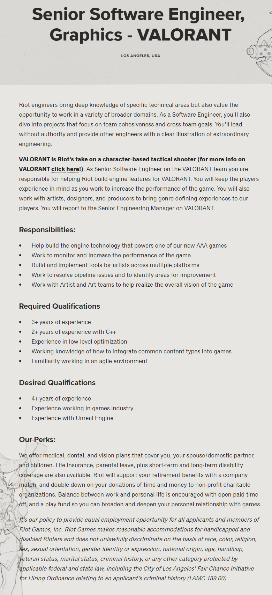
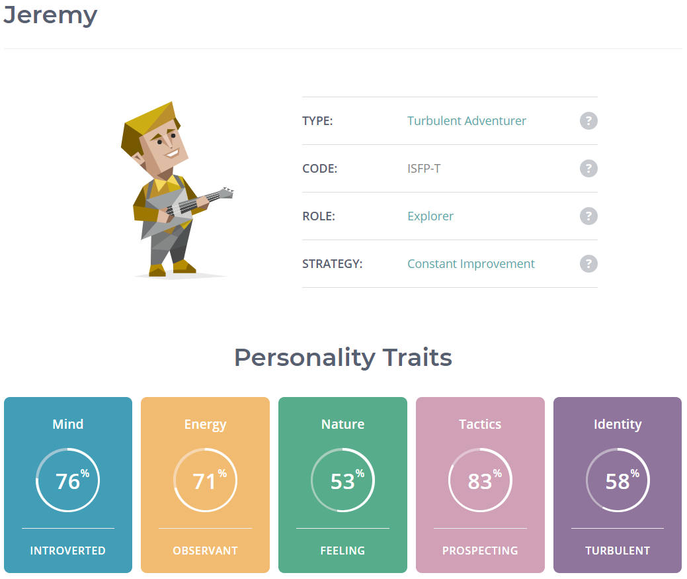
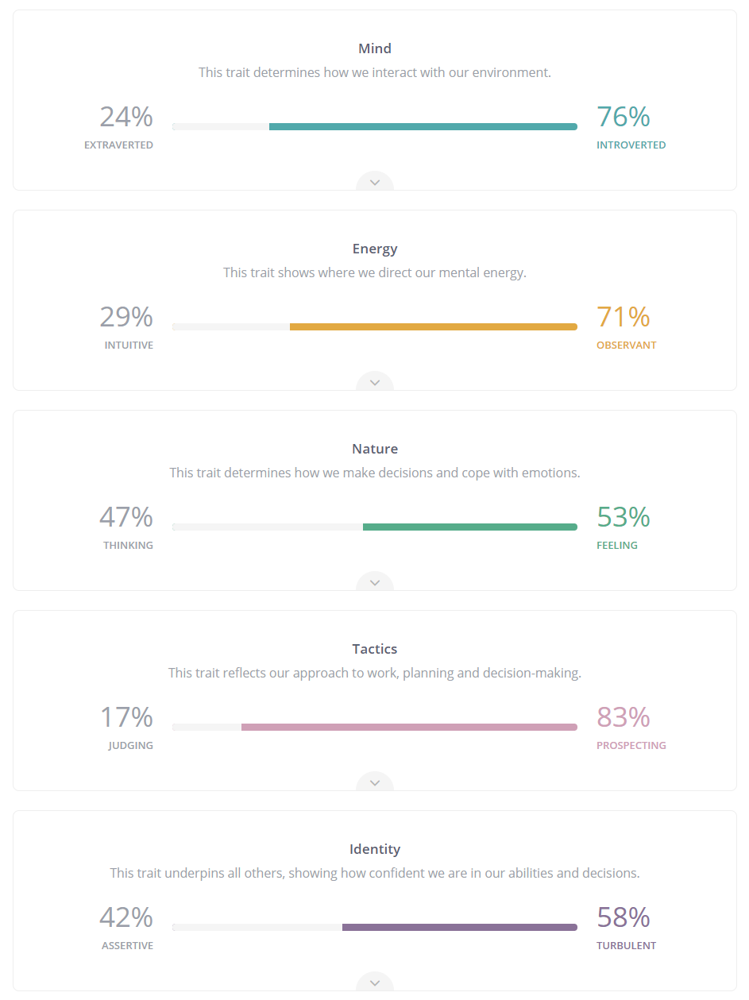
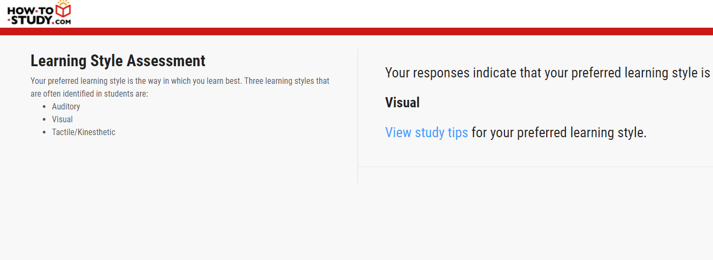

Hello There..
My name is Jeremy, and this is my Profile. If you're interested in who I am and what I do, then this
section is for you. (hehe, guess I'm a poet)
I live in a small town just outside of Warrnambool in the south-west region of Victoria called Koroit.
Its a great place to be, but someday I would like to try living in Melbourne. The big city feel gets
me every time I visit, and the ability to get literally any food I like at any time I want is a huge
bonus. Random bowl of fresh cheesey Pasta at 3am, no worries! Midnight Steak run served with chips
and veg, not a problem in the big smoke.
What do I do for work? I work in a butcher shop. I'm not a Butcher mind you, nor am I an apprentice.
To be completely honest, neither myself nor my employer has a proper job description for what I do.
I usually deliever meat, and make small goods. My life revolves around fulfilling orders, making burgers
and linking sausages for a living, among other things.
Outside of work I usually stay home. I do go out on occasion, however, I'm "right at home" just
staying at home. I play PC games, usually of a competitive nature playing against others, but a
great story focused campaign is just as appealing. Rocket League has been my go-to latly. If you
don't know what Rocket League is, it's basically Soccer, but the ball is huge and you're driving
a rocket powered car into it. My description really doesn't do it justice, it is much better to
experience it for yourself if you haven't yet had the pleasure. Another great game I play is Rust.
There aren't enough words to describe the rage-inducing, addictive and purely saisfiying gameplay
of Rust, you really must play it to know what you're missing.
I try to visit my Dad, and my dogs every Sunday. It's the only day my work doesn't open, so I'm
always free then. Although I did get called in once when a fridge broke down, I was hung over and
not happy. My dad has a couple of cats aswell as horses and chickens, but I'm most certainly a dog
person. It's simple really, dogs will always follow you and do things with you, cats are down right
lazy and chickens just lay eggs and make noise. I actually like horses but they don't like me,
unfortunately I'm allergic to their hair. Reggie, the oldest dog is a 'Bitzer' breed. Thats to say
he has a 'Bitz' of everything in him. His heart and personality is very much pure though and he
truly is my best mate. Buddy is the other dog, he's a big Alsatian, and loves a good cuddle.
It's much easier to pat him too because of how tall he his, I don't have to reach down. Reggie is
the better foot baller, he can take a mark like no other. And Buddy will outlast even the strongest
pitching arm when it comes to playing fetch.
I'm currently studying a few subjects through RMIT and I intend to eventually study the Batchelor of
Information Technolgy. It's obviously a little more challenging then the High School education I'm
used to, but it is so much more rewarding. I'm an absolute tech-head as far as I know. I build computers,
I code, I argue that Android is superior and I'm usually the one who is called upon when somebody I know
has an IT issue. I love trading Cryptocurrencies like Bitcoin and some other Alt Coins like Ethereum and
esspecially Cardano. I'm not going to explain what a cryptocurrency is as there are so many other
resources online that do a much better job of it. The point is, it's a great way to make some extra
cash, and lose it if you're not careful.
If you made this far, I can only assume I didn't bore you too much. There is a whole lot more info about
me crammed into this Profile, I encourage you to keep reading. Thankyou for your time.
- Jeremy N Bouchier
Pique your Interest..
During my intro, I briefly mentioned a few interests of mine. tl;dr I'm very much interested in playing
PC games, modding PC games, building computers and a whole plethora of other IT related things. That said,
growing up I had nobody around me who knew much about 'techy subjects' and my small-town society didn't
have much to offer either. Yet here I am studying IT at a University level. So what gives? What exactly
is my interest in IT?
Fair warning, I'm about to backtrack and ramble a little bit so feel free to scroll down, I'll have a
quick recap to save you some pain...
I got my first real computer back in high school at the start of year 7 - it was a cheap and slow laptop
that I adored until it died a few years later. I hadn't really used a computer much before then and at the
time the smartest phone I had ever owned was a $30 Nokia rip-off from Aldi. Booting that machine up for the
first time was a brand new experience for me, one that had lasting effects. I spent a lot of time learning
everything that my laptop, and computers in general could do, and eventually I realised a lot of things are
just better when you do them electronically.
It wasn't long before I was given a copy of Halo: Custom Edition and my love of games began. I played Halo,
I modded Halo... and then I grew tired of Halo. It was fun while it lasted but it was time to try something
new. Then Minecraft was brought to my attention. What. A. Game. Thanks to Minecraft I developed an interest
in the Java Programming Language and now almost 10 years later I still use Java for personal/hobby projects.
Halo made me love games and Minecraft sparked my interest in coding.
A quick recap before I continue. I'm a gamer and I love coding. Java is my strong suit, but I've tried c#,
c++, JavaScript and if it counts, html/css. And this all started at the begining of high school from a underpowered
school issued laptop. Go figure.
Today I'm a student at RMIT studying IT. My PC has become my entire personal life to the point where if
I could get paid to use it, I would happily quit my job and do so. I believe RMIT can make that a genuine
reality for me. I love the constant problem solving that comes along with coding, so who knows, maybe Software
Enginieering would be a great job prospect for me. Or it might not, either way I would be more than happy to try
it to find out. I wouldn't pass down an opportunity.
Hopeful Future..
When somebody asks me "what I want to be when I'm older", or something similiar, its always easy for me to reply
"Software Engineer" or "Game Developer". They're valid answers, but barely. Saying Game Developer is so open
ended, and there are a few areas of software I would actively avoid like the plague, so what is an ideal job
in my opinion?
Lets take a look at one shal we? And full disclosure, I am in no way qualified to meet any of these requirements, yet!
Senior Software Engineer, Graphics - Riot Games
www.riotgames.com
I like Games, I like software and I esspecially like spending countless hours trying to render a triangle using
the Vulkan Graphics API, only to have it fail... (That last point about the triangle is a lie).
Let's be serious though, C/C++ and Graphics API's are an area I have little to no experience in, even the
Mathematical knowledge required for 3D Graphics isn't entirly clear to me. I can only dream of one day writing
my very own basic 3D game engine for games no one will ever want to play. But thats okay, hardware accelerated
graphics is a skill that can be applied outside of the games industry so I wouldn't be locked down to a (not so)
small pool of available jobs anyway.
Riot Games is a multi-studio and multi-national Games Developer Headquartered in West Los Angeles, California,
United States. They have really great benefits for their employees and my interests align well with theirs.
As a Senior Graphics Software Engineer I would be responsible for handling the rendering of content from within
a game engine - that is as simple as I can put it. I would be working with simulated 3D content and projecting it
on what is essentially a 2D plane - all with visual perspective (far away objects appear smaller etc.). An understanding
of trigonometry and in-depth knowledge of various graphics APIs (DirectX, Vulkan, OpenGL etc.) is a must. And then theres
all of the colours of the on-screen objects. Vertex Shaders must be written in different languages depending on the
Graphics API being used and that comes back to knowing in-depth the Graphics API you're using.
Riot want somebody experienced in Graphics Programming for this role, at least 3 years as a requirement. And of
course C++ experience is needed. I don't have the experience, or the skills they want. But I have the determination to get there.

Snapshot of job advertisement at Riot Games.
Riot Games n.d., Senior Software Engineer, Graphics - VAOLRANT, Riot Games, viewed 17 March 2021,
<https://www.riotgames.com/en/work-with-us/job/2375046/senior-software-engineer-graphics-valorant-los-angeles-usa>.
Dont test Me..
I took a Myers-Briggs personality test, here are the results.
Please open the images in a new tab to view them properaly.


I also took a 'Learning Style' test from how-to-study.com. According to the results I'm a Visual Learner.

Again, it's advised you view images in a new tab
And lastly I took a Creativity Test:
I haven't written a lot about these tests because I honestly don't think too much of them. I don't
believe the results actually mean anything useful. You cannot develop a critical opinion about someone
based upon a generic online test.
Furthermore I would never consider these tests as a means to find "appropriate team members" as so
many others do while gathering people for a project. If you really want to know somebody's personality
you should interect with that person for yourself and form your own opinion.
The creativity test says that I'm slightly below average when it comes to creative thinking. However,
it wouldn't be wise for me to limit my involvement in creative team tasks. The same logic applies for
a high creativity score i.e. I should not jump in and take over a creative team task because
"I'm better according to a test I found on the internet".
The point is, don't sell yourself short because a test says your not good enough. But don't get a big
head either if the test goes in your favour. I personally would much rather work with someone who is open minded
and is prepared to consider the thoughts, ideas and opinions of others even if their ideas make more sense.